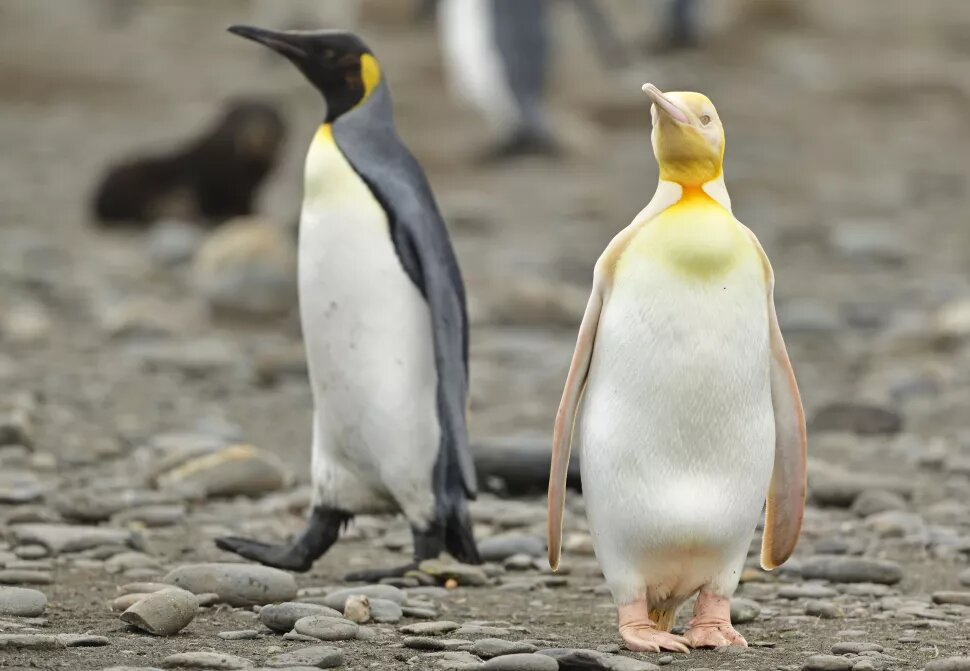
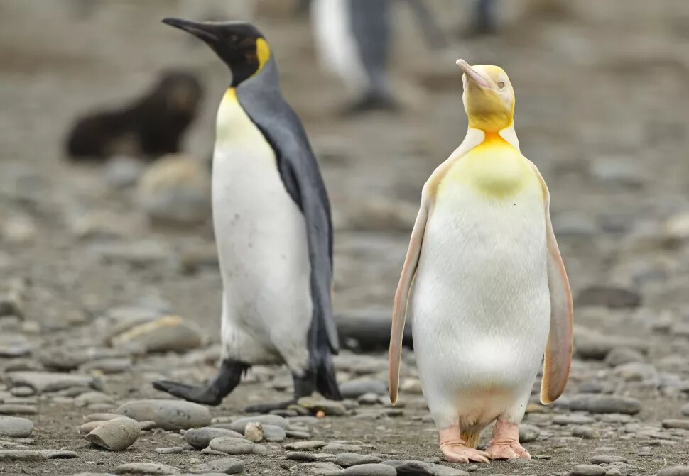

Si quieres ver más imagenes de pinguinos, da click en este enlace.
3 cosas que aman los pinguinos
3 cosas que odian los pinguinos
¿Tu pingüino es adulto o bebé?
¿Que tipo de personalidad tiene un pinguino?
 
